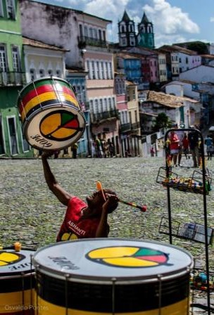

Curiosidades
O Farol da Barra conta com um acervo histórico formado por objetos de diversas épocas, alguns deles submersos por até 300 anos.
O nome Acarajé provém de um dialeto africano, Ioruba, Akara significa “Bola de Fogo” e Jé significa “comer” ou “comida”. Originalmente, o acarajé era uma comida usada em rituais para os orixás.

O carnaval baiano existe desde o século XVIII.